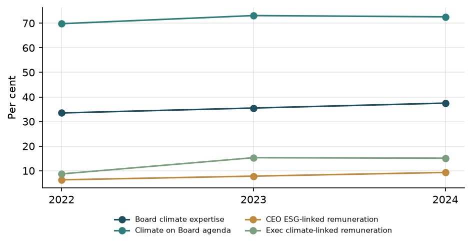
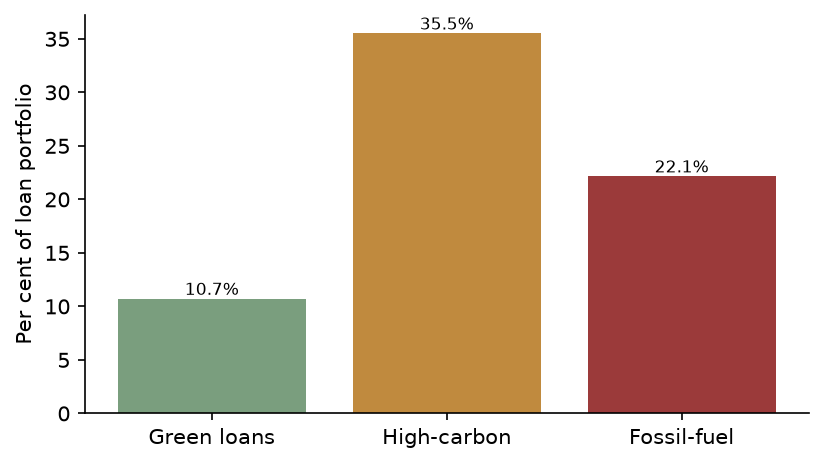

General Requirements
Understanding the Bank’s approach towards implementing IFRS S1 and IFRS S2 requirements
This report sets out Eurolux Universal Bank AG’s sustainability-related and climate-related financial disclosures. The disclosures are structured around the core pillars reflected in IFRS S1 and IFRS S2: Governance, Strategy, Risk management, and Metrics and targets.
The purpose of this report is to provide decision-useful information on sustainability-related and climate-related risks and opportunities that could reasonably be expected to affect the Bank’s business model, cash flows, access to finance and cost of capital over the short, medium and long term. The report focuses in particular on:
- climate-related transition and physical risks in the Bank’s lending and financing portfolios;
- climate-related risks and impacts associated with the Bank’s own operations; and
- climate-related opportunities that may arise from the transition to a lower-carbon and more sustainable economy.
The report follows an IFRS S1/S2-style structure and terminology to support users in understanding how sustainability-related and climate-related matters are governed, integrated into strategy and risk management, and measured through metrics and targets. Parts of the report rely on modelled estimates, internal models and analyses, and data available to the Bank (including counterparty and third‑party data), particularly for climate scenario analysis and financed emissions. These areas are subject to a higher degree of estimation uncertainty.
The Bank does not assert full legal compliance with IFRS S1 and IFRS S2. Rather, the report is prepared with the intention of aligning with the principles and core disclosure concepts of these standards, recognising that sustainability reporting practices, data availability and methodologies will continue to evolve over time.
Fair presentation
The Bank aims to present a balanced and transparent view of material sustainability-related and climate-related risks and opportunities that could reasonably be expected to affect its prospects. The disclosures are prepared using internal risk registers, climate scenario analysis, portfolio exposure mapping and value chain information, together with governance and performance indicators.
In preparing this report, the Bank has:
- focused on topics that are material to its business model and value chain, with particular emphasis on climate-related risks in high-emitting and climate-sensitive sectors within the lending portfolio;
- used quantitative metrics where data and methods are sufficiently developed, including financed emissions and selected climate-related exposure indicators; and
- complemented quantitative information with qualitative descriptions of governance, strategy and risk management processes.
Data quality, coverage and methodologies for certain sustainability-related metrics, especially financed emissions and climate scenario outputs, are still developing. Some disclosures are therefore subject to inherent estimation uncertainty, model risk and limitations in underlying data from counterparties and third parties. The Bank does not claim that the information in this report is exhaustive, nor that all sustainability-related risks and opportunities have been fully quantified or that all information is free from material error.
Information on governance is based on what is currently disclosed in this report and is subject to the boundaries described in the Governance section. Climate-related metrics for the Bank’s own operations are not yet comprehensively disclosed, and detailed calculation methodologies for financed emissions and other portfolio metrics are not described in this report. The Bank will continue to refine its methodologies, expand data coverage and enhance disclosure over time.
The Bank has obtained external assurance over selected greenhouse gas emissions relating to its own operations, limited to Scope 1 and Scope 2 emissions. This assurance does not extend to financed emissions, other climate-related metrics or the sustainability-related disclosures in this report as a whole.
Connected information
The report is designed to show the connections between governance, strategy, risk management and metrics and targets, and to link these to the Bank’s financial position and performance.
-
Governance: The Governance section describes the roles of the Board and management in overseeing sustainability-related and climate-related matters, including the use of climate-related risk information, trend metrics on governance effectiveness and the integration of climate considerations into executive remuneration. Governance structures support oversight of climate-related risks identified in the climate risk register and considered in scenario analysis.
-
Strategy: The Strategy section explains how climate-related risks and opportunities are considered in the Bank’s strategic planning, including the assessment of transition and physical risks across key sectors in the lending portfolio. It draws on climate scenario analysis and portfolio exposure mapping to identify sectors such as mining, refined petroleum, air transport and selected manufacturing activities where transition risk is elevated, as well as sectors exposed to chronic physical risk.
-
Risk management: The Risk management section outlines how climate-related risks are integrated into the Bank’s broader risk management framework, including the use of a climate risk register, sectoral exposure analysis and scenario outputs. It explains how climate-related risks in the lending portfolio and in own operations (including potential physical disruption) are identified, assessed and monitored.
-
Metrics and targets: The Metrics and targets section provides quantitative indicators and targets that support the governance, strategy and risk management narratives. These include financed emissions, portfolio exposure metrics to high-emitting and climate-sensitive sectors, green finance and climate-related capital allocation metrics, and climate-related targets. Where relevant, these metrics are linked to governance oversight (for example, through climate-related remuneration components) and to strategic objectives.
Connections across the report are made explicit by:
- using common sector classifications and value chain nodes across Strategy, Risk management and Metrics and targets;
- aligning the description of climate-related risks in the climate risk register with the sectors and exposures quantified in the Metrics and targets section; and
- referencing governance oversight of key decisions and targets that relate to climate-related risks and opportunities.
This integrated approach is intended to help users understand how sustainability-related and climate-related matters influence the Bank’s strategy, risk profile and performance, and how they may affect future cash flows, access to finance and cost of capital.
Comparative information
Where trend information is available, the Bank provides comparative information to support users in assessing progress over time. In particular, the Governance section includes trend metrics such as:
- the number of ESG- and climate-related committee meetings;
- the percentage of Board members with climate-related expertise;
- the proportion of CEO and executive remuneration linked to ESG or climate-related performance;
- the percentage of Board meetings at which climate-related topics are on the agenda; and
- the frequency of full Board meetings.
These trend indicators allow users to observe changes in governance focus and capability over time.
For portfolio exposure metrics, financed emissions and other climate-related quantitative indicators, the Bank’s current disclosures focus on a single reporting period. Comparable prior-year figures for these metrics are not yet available in a form suitable for inclusion in this report. As a result, year-on-year comparisons for portfolio-level climate metrics and targets are limited.
Where methodologies, data sources or definitions change in future reporting periods, the Bank intends to explain material changes that affect comparability. At this stage, no restatements of prior-period sustainability-related information are reported.
Timing and location of disclosure
This report covers a single annual reporting period for Eurolux Universal Bank AG. The sustainability-related and climate-related financial disclosures are presented as part of a dedicated sustainability and climate report for the Bank.
The report is intended to complement the Bank’s general purpose financial statements by providing additional information on sustainability-related and climate-related risks and opportunities that may affect the Bank’s prospects. Users should read this report alongside the Bank’s financial statements and other regulatory disclosures to obtain a more comprehensive view of the Bank’s risk profile and performance.
The report does not specify a publication date or external filing location. Any future changes in timing, frequency or location of sustainability-related disclosures will be communicated in line with applicable regulatory and market expectations.
Reporting entity, business model and value chain
The reporting entity for this report is Eurolux Universal Bank AG. The Bank is domiciled in Germany (DE). The presentation currency used for all monetary amounts in this report is the euro (EUR).
Total assets amount to 850,000 million euros and total loans amount to 31,150.64 million euros. These figures provide context for the scale of the Bank’s balance sheet and the relative significance of climate-related exposures within the lending portfolio. The report does not specify the consolidation boundary or the list of subsidiaries included in the reporting scope. Accordingly, this report does not state whether the sustainability-related disclosures are fully aligned with the consolidation scope of the Bank’s financial statements.
The Bank’s business model is that of a universal commercial bank. While detailed business line descriptions are not provided in this section, the value chain mapping used for climate-related disclosures distinguishes between:
-
Own operations: including banking buildings, corporate fleet and business travel. These activities generate Scope 1 and Scope 2 emissions and are exposed to potential physical disruption and transition-related changes in energy use and mobility patterns.
-
Upstream suppliers: including IT infrastructure and cloud providers, office space landlords and professional services suppliers. These relationships are relevant for selected environmental and Scope 3 categories but are not currently identified as material climate-related risk drivers for the Bank.
-
Downstream activities and financing counterparties: including corporate borrowers across a range of sectors. The Bank has identified several sectors within its lending portfolio as particularly relevant for climate-related risk analysis, including:
- manufacture of coke and refined petroleum products;
- mining of coal and lignite;
- mining of metal ores and other mining and quarrying;
- air transport;
- manufacture of motor vehicles, electrical equipment and food products;
- civil engineering; and
- education.
For these sectors, the Bank has assessed transition risk (for example, from carbon pricing and demand shifts) and chronic physical risk, and has quantified associated financial exposures in millions of euros. These value chain nodes form a core part of the Strategy, Risk management and Metrics and targets sections.
Employee commuting and certain upstream services are recognised as part of the broader value chain but are not currently treated as material climate-related risk drivers in this report. The Bank may expand the scope of value chain analysis in future reporting cycles as data and methodologies develop.
Sources of guidance
The primary framing for this report is provided by IFRS S1 General Requirements for Disclosure of Sustainability-related Financial Information and IFRS S2 Climate-related Disclosures. The structure of the report, the focus on governance, strategy, risk management, and metrics and targets, and the emphasis on decision-useful information about sustainability-related and climate-related risks and opportunities are aligned with these standards.
The Bank operates within a European sustainability reporting environment and is mindful of sustainability reporting requirements that may apply to banks operating in Europe. However, this report does not assert adherence to a specific jurisdictional implementation of those requirements.
The Bank has not yet assessed the applicability of the SASB Standards or other industry-specific sustainability disclosure frameworks in a systematic way. This is a limitation of the current reporting approach. The Bank intends to consider the relevance of such frameworks, including SASB, in future reporting cycles to support further development of its sustainability-related financial disclosures.
Statement of compliance
This report is prepared with the intention of aligning with the principles and core disclosure concepts of IFRS S1 and IFRS S2, including:
- focusing on sustainability-related and climate-related risks and opportunities that could reasonably be expected to affect the Bank’s prospects;
- providing information that is comparable, verifiable, timely and understandable, to the extent practicable; and
- explaining the connections between governance, strategy, risk management, and metrics and targets.
The Bank does not state that this report constitutes full compliance with IFRS S1 and IFRS S2 as formally adopted in any jurisdiction. In particular:
- the report does not confirm that the sustainability-related disclosures are prepared for the same reporting entity and consolidation boundary as the financial statements;
- detailed alignment of data and assumptions between sustainability-related disclosures and the financial statements is not described; and
- certain methodologies, especially for financed emissions and scenario analysis, are still being developed and may not yet meet all technical expectations of the standards.
The Bank will continue to enhance its sustainability-related financial disclosures over time, with the aim of progressively increasing alignment with IFRS S1 and IFRS S2 and with evolving regulatory expectations in the European sustainability reporting environment.
Materiality assessment
The Bank’s approach to determining which sustainability-related and climate-related topics are included in this report is risk- and portfolio-driven. The materiality assessment is grounded in:
- the climate risk register, which identifies key transition and physical risks relevant to the Bank’s activities;
- portfolio exposure mapping, which quantifies lending and financing exposures to sectors with elevated climate-related risk, such as mining, refined petroleum, air transport and selected manufacturing sectors; and
- climate scenario analysis outputs, which provide indicative insights into how climate-related risks and opportunities could affect the Bank’s portfolio and business model over different time horizons.
This approach focuses on sustainability-related and climate-related risks and opportunities that could reasonably be expected to affect the Bank’s cash flows, access to finance and cost of capital over the short, medium and long term. Short, medium and long term are defined consistently with the Bank’s internal planning horizons used for strategic decision-making; however, specific time-band definitions are not disclosed in this report. The Bank intends to provide more detail on these time bands in future reporting cycles.
The material topics covered in this report therefore include:
- climate-related transition risks in high-emitting and climate-sensitive sectors within the lending portfolio;
- climate-related physical risks that may affect counterparties and, to a lesser extent, the Bank’s own operations through potential physical disruption;
- climate-related opportunities associated with financing the transition to a lower-carbon and more sustainable economy; and
- governance, risk management and performance indicators that are central to the Bank’s management of these risks and opportunities.
No formal, standardised materiality methodology covering all sustainability topics is presented in this report. The Bank has not yet developed a comprehensive, documented process that would cover all sustainability topics beyond climate in a uniform way. Instead, the selection of topics and metrics reflects the current state of the Bank’s climate risk register, value chain mapping, portfolio exposure analysis and climate scenario work.
As data quality, methodologies and regulatory expectations evolve, the Bank intends to further refine its materiality assessment approach, broaden its coverage of sustainability topics beyond climate, and enhance the transparency of the criteria and processes used to determine which sustainability-related information is disclosed.
Governance
Overview
Eurolux Universal Bank AG integrates climate-related governance into its overall corporate governance framework. Climate-related governance is reflected in Board oversight, ESG & Sustainability Committee activity, executive management responsibility, semi-annual Board reporting, ERM integration indicators, climate checks for major transactions and a climate risk register.
The Board of Directors oversees climate-related risks and opportunities as part of its broader oversight of strategy, risk and performance. Board oversight is reflected in the frequency with which climate appears on the Board agenda, semi-annual climate risk reporting and documented climate-related decisions in 2024. The ESG & Sustainability Committee supports the Board through more detailed consideration of climate-related topics and preparation of recommendations for Board decision.
At management level, the Climate Risk Management Committee coordinates the identification, assessment and monitoring of climate-related risks and opportunities. Management uses a climate risk register that, in 2024, recorded 8 climate-related risks, together with ERM integration indicators, monitoring frequencies, links to climate scenario analysis identifiers, mitigation actions and climate checks for major transactions.
Board skills and competencies in relation to climate are reflected in the proportion of directors with climate-related expertise and in a skills development programme. Climate-related performance is further reinforced through ESG-linked remuneration for the Chief Executive Officer and climate-linked remuneration for executives. External limited assurance over Scope 1 and Scope 2 greenhouse gas emissions provides an additional control over a subset of climate-related metrics.
The role of the Board of Directors
The Board of Directors of Eurolux Universal Bank AG comprises 10 members, of whom 68.5% are independent. In the financial year 2024, the Board met 8 times, compared with 7 meetings in 2023 and 4 meetings in 2022. Climate-related topics featured on the Board agenda at 72.6% of Board meetings in 2024, compared with 73.1% in 2023 and 69.8% in 2022. This trend indicates that climate-related matters have been a recurring topic of Board discussion over the past three years.
The Board receives climate risk reporting from management on a semi-annual basis. This reporting provides an overview of material climate-related risks drawn from the climate risk register. Through this reporting and its regular agenda coverage, the Board is informed about climate-related risks and opportunities and their potential implications for the Bank’s business model and risk profile.
The Board oversees the setting and monitoring of climate-related targets through its consideration of management reports and documented climate-related decisions in 2024. The Board also takes climate-related factors into account when overseeing strategy and when considering major transactions, as reflected in the existence of climate checks for major transactions and in the climate-related decisions taken during the year. However, the Bank does not currently disclose a separate climate-specific Board mandate or terms of reference.
Board oversight of climate-related performance is linked to remuneration through the inclusion of ESG-related components in the Chief Executive Officer’s compensation and climate-related elements in executive remuneration. The Board reviews and approves these remuneration structures, including the climate-related performance metrics that apply to senior management.
The Board’s oversight of climate-related risks and opportunities is therefore reflected in: the composition and independence of the Board; the frequency of Board meetings; the proportion of meetings at which climate-related topics are discussed; semi-annual climate risk reporting; documented climate-related decisions in 2024; and the integration of climate-related metrics into executive remuneration.
Board committees and climate-related oversight
The Board is supported by an ESG & Sustainability Committee, which considers climate-related matters in more detail and prepares recommendations for the Board. In 2024, the ESG & Sustainability Committee met 7 times, compared with 6 meetings in 2023 and 5 meetings in 2022, indicating an increasing cadence of committee-level engagement on ESG and climate topics.
The ESG & Sustainability Committee reports to the Board on its deliberations and recommendations. Committee activity in 2024 included the review of climate-related risks and opportunities, the consideration of climate-related targets and transition planning, and the preparation of recommendations that informed documented climate-related decisions taken by the Board and the committee during the year. These decisions are summarised in the Governance decisions, controls and evidence boundaries subsection.
The Bank does not currently disclose a separate charter or terms of reference for the ESG & Sustainability Committee. The governance information presented in this report is therefore based on the committee’s observed activity, meeting frequency and reporting line to the Board, rather than on a formal climate-specific mandate.
Management responsibility for climate-related risks and opportunities
Management responsibility for climate-related risks and opportunities is assigned to the Climate Risk Management Committee. This committee coordinates the identification, assessment and monitoring of climate-related risks and opportunities across the Bank and provides climate risk reporting to the Board on a semi-annual basis.
The Bank uses a climate risk register that, in 2024, recorded 8 climate-related risks. These risks cover both physical and transition risk categories, including physical acute, physical chronic, transition market, transition policy, transition reputational and transition technology risks. The register records risk ratings (high or medium), time horizons (short term 0–2 years, medium term 2–5 years and long term 5 years and beyond), monitoring frequencies (quarterly or semi-annual), ERM integration indicators, links to climate scenario analysis identifiers and mitigation actions. Six of the eight recorded climate-related risks are flagged as integrated into the Bank’s enterprise risk management framework. Four of the eight climate-related risks changed since the prior period.
The climate risk register includes, for example, high-rated transition risks related to technology shifts in auto lending and market risks associated with potential stranded assets in the fossil fuel sector, as well as high-rated physical risks related to mortgage book flood exposure and medium-rated reputational risks linked to scrutiny of financed emissions. These risks are associated with indicative financial impact estimates and are monitored on a quarterly or semi-annual basis, as recorded in the register.
Mitigation actions recorded in the climate risk register include: climate scenario stress testing integrated into the Internal Capital Adequacy Assessment Process (ICAAP); collateral revaluation and flood mapping overlays; engagement and transition-plan covenants with borrowers; green retrofit financing incentives; portfolio decarbonisation glide-path monitoring; and sector exposure limits with enhanced due diligence. These actions are applied at the level of the risk register and are linked, where relevant, to specific risks and scenario analysis identifiers.
ERM integration indicators in the climate risk register show where climate-related risks are incorporated into the Bank’s broader risk management processes. The Bank also applies climate checks for major transactions, as recorded in the governance data. This indicates that climate-related considerations are taken into account in the assessment of major transactions, although the Bank does not currently disclose a formal policy that makes such checks mandatory in all cases.
The Bank does not currently disclose formal escalation thresholds or trigger-based escalation mechanics for climate-related risks. Escalation of climate-related issues to the Board is therefore described in terms of semi-annual climate risk reporting and documented climate-related decisions, rather than through quantified escalation criteria.
Skills, competencies and remuneration
Board-level climate-related skills and competencies are reflected in the proportion of directors with climate-related expertise. In 2024, 37.5% of Board members were recorded as having climate-related expertise, compared with 35.5% in 2023 and 33.5% in 2022. This upward trend indicates a gradual increase in climate-related knowledge and experience at Board level.
The Bank operates a skills development programme that includes climate-related content for Board members and senior management. This programme is intended to support ongoing understanding of climate-related risks, opportunities and regulatory developments. However, the Bank does not currently disclose a formal process for assessing the adequacy of Board skills and competencies in relation to climate, beyond the reported expertise percentage and the existence of the skills development programme.
Remuneration structures incorporate climate-related performance metrics. The Chief Executive Officer’s compensation includes an ESG-linked component, which accounted for 9.3% of total CEO compensation in 2024, compared with 7.8% in 2023 and 6.3% in 2022. For executives as a group, climate-linked remuneration accounted for 15.1% of total executive remuneration in 2024, compared with 15.3% in 2023 and 8.7% in 2022. These metrics indicate that climate-related and broader ESG performance have been integrated into incentive structures over the past three years.
The Board reviews and approves the remuneration framework, including the ESG-linked and climate-linked components. This provides a mechanism through which climate-related targets and performance metrics are reflected in executive incentives. The Bank does not currently disclose detailed calibration of individual climate-related key performance indicators within remuneration, which is therefore outside the scope of this report.
Governance decisions, controls and evidence boundaries
In 2024, the Board and its ESG & Sustainability Committee took a number of specific climate-related decisions:
- On 24 January 2024, the full Board approved the 2024 ESG report for publication, following discussion of the carbon credit procurement approach and the Bank’s transition plan.
- On 15 April 2024, the ESG & Sustainability Committee and, subsequently, the full Board approved the climate scenario analysis methodology, following committee discussions on executive remuneration ESG key performance indicators, net-zero progress, physical risk updates, TCFD-related matters and transition planning.
- On 15 April, 20 May, 19 July and 26 November 2024, the ESG & Sustainability Committee and the full Board approved the carbon credit procurement budget for 2024, in the context of discussions on executive remuneration ESG key performance indicators, net-zero progress, physical risk updates, scenario analysis, TCFD-related matters and transition planning.
- On 1 November 2024, the full Board endorsed a revision of the Bank’s interim net-zero target, following consideration of net-zero progress.
- On 7 October 2024, the full Board endorsed an updated transition plan, following discussion of green finance growth and TCFD-related matters.
These decisions illustrate how the Board and the ESG & Sustainability Committee take climate-related risks and opportunities into account when overseeing strategy, targets, transition planning, major transactions and remuneration. They also show how climate-related topics are integrated into broader Board and committee agendas.
Management controls and procedures for climate-related risks and opportunities in 2024 included:
- Use of a climate risk register that recorded 8 climate-related risks, with risk categories, ratings, time horizons, monitoring frequencies, ERM integration indicators, links to climate scenario analysis identifiers and mitigation actions.
- ERM integration indicators showing that 6 of the 8 recorded climate-related risks were integrated into the enterprise risk management framework.
- Semi-annual climate risk reporting to the Board, providing an overview of material climate-related risks drawn from the climate risk register.
- Climate checks for major transactions, indicating that climate-related considerations were taken into account in the assessment of such transactions.
- Mitigation actions recorded in the climate risk register, including climate scenario stress testing integrated into the ICAAP, collateral revaluation and flood mapping overlays, engagement and transition-plan covenants with borrowers, green retrofit financing incentives, portfolio decarbonisation glide-path monitoring and sector exposure limits with enhanced due diligence.
External assurance and alignment indicators are subject to the following boundaries:
- The Bank obtained limited external assurance from EY over its Scope 1 and Scope 2 greenhouse gas emissions for 2024, in accordance with ISAE 3000. This assurance covers only Scope 1 and Scope 2 emissions. Financed emissions and other Scope 3 categories, including the Bank’s reported 2024 financed emissions of 35,973,167.69 tCO₂e, are outside the stated assurance scope.
- Internal records flag the Bank’s climate-related disclosures as aligned with TCFD and IFRS S2. These flags indicate an internal assessment of alignment status. The Bank does not currently operate a separate governance control process specifically designed to verify or assure TCFD or IFRS S2 alignment beyond the governance mechanisms described in this section.
The Bank’s governance disclosures are subject to the following evidence boundaries:
- The Bank does not currently disclose a separate climate-specific charter, terms of reference or formal mandate for the Board or the ESG & Sustainability Committee. Governance roles are therefore described on the basis of observed activity, reporting lines and decisions.
- The climate risk register records ERM integration indicators for individual risks, but the Bank does not present this as a comprehensive integration of climate-related risks across all elements of the enterprise risk management framework.
- The Bank does not currently disclose formal escalation thresholds or trigger-based escalation mechanics for climate-related risks. Escalation is described through semi-annual reporting and decision-making processes rather than quantified triggers.
- Board decision records identify climate-related decisions but do not describe quantified or specific Board-level trade-offs between climate-related objectives and factors such as profitability, capital allocation, implementation cost, risk appetite or competing strategic priorities. The Bank therefore does not report such trade-offs in this section.
- Board climate-related skills are evidenced through the percentage of directors with climate-related expertise and the existence of a skills development programme. The Bank does not currently disclose a formal process for assessing the adequacy of Board skills and competencies in relation to climate.
- Management committee names differ across years (Group Sustainability Committee in 2022, ESG Executive Committee in 2023 and Climate Risk Management Committee in 2024). The Bank does not assert continuity or formal renaming between these committees and reports only the 2024 Climate Risk Management Committee as the management body responsible for climate-related risks and opportunities in the current year.
These boundaries reflect the current stage of development of Eurolux Universal Bank AG’s climate-related governance and the scope of information included in this report for the year ended 31 December 2024.
Supporting data and exhibits
Table G1 — Climate governance indicators (three-year trend)
| Indicator |
2022 |
2023 |
2024 |
| Full Board meetings |
4 |
7 |
8 |
| ESG & Sustainability Committee meetings |
5 |
6 |
7 |
| Board members with climate expertise |
33.5% |
35.5% |
37.5% |
| Meetings with climate on the agenda |
69.8% |
73.1% |
72.6% |
| CEO remuneration linked to ESG |
6.3% |
7.8% |
9.3% |
| Executive remuneration linked to climate |
8.7% |
15.3% |
15.1% |
Figure G1 — Climate governance indicators, 2022–2024

Strategy
Overview
Eurolux Universal Bank AG’s climate-related strategy is structured around identifying and managing material physical and transition risks across its value chain, developing climate-related financing opportunities, and integrating climate considerations into risk management, planning and capital allocation. The strategy is anchored in the Bank’s lending and capital markets activities and is informed by climate scenario analysis based on NGFS version 4 pathways.
Climate factors are embedded in portfolio steering, client engagement and sector exposure management, and are linked to climate-related targets for own operations, financed emissions and a long-term net-zero objective. Financed emissions and portfolio carbon intensity are monitored alongside credit and capital metrics to inform decarbonisation glide-path monitoring and reputational risk management. Dedicated climate-related capital and operating expenditure support lending platforms, data and modelling capabilities, and selected operational efficiency initiatives. Scenario analysis of the lending book across key European jurisdictions is used to assess climate-related financial effects and to test the robustness of the Bank’s strategy under defined NGFS version 4 scenarios over short-, medium- and long-term horizons.
Sustainability risks and opportunities across the value chain
The Bank’s climate-related risk profile comprises both physical and transition risks across short (0–2 years), medium (2–5 years) and long-term (beyond 5 years) horizons. Physical risks include acute hazards such as flooding and wildfires affecting the mortgage book and regional portfolios, with high-rated risks such as “Physical risk — mortgage book flood exposure” (estimated potential financial impact of EUR 24.8 million in the long term) and “Physical risk — wildfire exposure in southern portfolio” (EUR 22.7 million in the short term). Chronic physical risks also affect own operations, including banking premises and corporate travel, through potential disruption and incremental operating costs.
Transition risks are more prominent in the Bank’s risk register. High-rated risks include technology-driven shifts in the automotive sector (“Transition risk — EV shift in auto lending”, short term, EUR 165.2 million), market and policy risks related to fossil fuel and industrial exposures (“Stranded assets — fossil fuel sector exposure”, long term, EUR 136.5 million; “Transition risk — carbon pricing on industrial loans”, medium term, EUR 67.5 million), and reputational risk from scrutiny of financed emissions (EUR 65.5 million, medium term). These figures are internal estimates of potential financial impact rather than realised losses.
Across the value chain, the most material climate-related exposures arise in downstream financing counterparties. High-carbon sector exposure represents 35.5% of the loan book (EUR 11,059.49 million), with fossil fuel exposure at 22.15% (EUR 6,899.59 million). Key value-chain nodes include corporate borrowers in the manufacture of coke and refined petroleum (EUR 3,903.65 million), mining of coal and lignite (EUR 3,547.58 million), mining of metal ores (EUR 2,749.58 million) and other mining and quarrying (EUR 2,102.44 million), all characterised by elevated transition policy risk from carbon pricing and demand shifts. Other material nodes, such as manufacture of motor vehicles and education, are exposed to both physical and transition risks.
Own operations and upstream suppliers contribute to Scope 1, Scope 2 and selected Scope 3 emissions and face transition market risk, particularly through the corporate fleet and business travel. Two value-chain nodes are assessed qualitatively without quantified financial exposure; these are considered material from a risk-management perspective but have not yet been quantified.
Financed emissions from the lending portfolio are estimated at 35,973,167.69 tonnes of CO₂ equivalent, corresponding to a portfolio carbon intensity of 1,154.81 tonnes of CO₂ equivalent per million euro of exposure. These metrics are relevant to the reputational risk associated with financed emissions scrutiny, to the Bank’s financed-emissions intensity target, and to portfolio steering through decarbonisation glide-path monitoring.
Climate-related opportunities are identified primarily in downstream products and services. The Bank estimates total potential revenue uplift of EUR 465.0 million from climate-related opportunities, recognising these as estimates rather than assured outcomes. Examples include: expansion of green and sustainability-linked loans aligned with the EU Taxonomy (estimated revenue impact of EUR 180.0 million in the medium term, with medium confidence); growth in green and social bond underwriting (EUR 95.0 million in the short term, medium confidence); transition advisory services for corporate clients (EUR 42.0 million in the medium term, medium confidence); and renewable energy project finance for solar, wind and battery storage (EUR 130.0 million in the long term, medium confidence). Operational energy-efficiency measures in own facilities (EUR 18.0 million in the short term, medium confidence) are expected to reduce energy costs and emissions.
Strategic management of climate-related risks and opportunities
The Bank manages climate-related risks and opportunities through an integrated strategy that combines risk governance, portfolio steering, client engagement and product development. Climate-related risks are incorporated into the credit risk framework and risk appetite, with environmental, social and governance factors considered in credit analysis alongside traditional macroeconomic and microeconomic drivers of borrower creditworthiness.
Transition risk management focuses on high-carbon and fossil fuel exposures. Sector exposure limits and enhanced due diligence are applied to industrial sectors sensitive to carbon pricing, such as mining and heavy manufacturing. The Bank monitors a portfolio decarbonisation glide path, particularly for sectors with elevated financed emissions, to guide lending decisions and client engagement. Financed emissions of approximately 36 million tonnes of CO₂ equivalent and a portfolio carbon intensity of around 1,155 tonnes of CO₂ equivalent per million euro are used as reference points in this monitoring, including in relation to reputational risk from financed emissions scrutiny. For fossil fuel sector exposures, the Bank recognises the risk of stranded assets and applies collateral revaluation practices; flood mapping overlays are used in the context of physical risk assessment, particularly for mortgage and other collateralised portfolios.
Physical risks are addressed through collateral and location-based risk assessments, including flood-zone overlays and monitoring of energy performance certificates for collateral in relevant portfolios. Engagement and transition-plan covenants with borrowers are used in selected portfolios, including in relation to mortgage flood risk, to encourage resilience and emissions reduction measures.
Climate scenario stress testing is applied to the lending book in the covered European jurisdictions and the resulting outputs are used as one input to capital planning within the Internal Capital Adequacy Assessment Process for those portfolios, rather than as a standalone determinant of capital decisions across the Bank.
The Bank’s climate-related targets provide directional guidance: an absolute reduction target for Scope 1 and 2 emissions by 2030 under a 1.5°C pathway, an intensity reduction target for financed emissions in the investment and lending portfolio by 2030 under the Net-Zero Banking Alliance framework, and a net-zero target across all scopes by 2050. Management currently assesses these targets as on track based on internal monitoring, with reported progress of 40.0%, 25.0% and 13.3% respectively in 2024. Detailed assumptions and dependencies underlying the transition plan, including specific policy, technology and customer-behaviour pathways, are not described in this report, and users should not infer that a fully specified transition plan has been disclosed.
On the opportunity side, strategic management includes expanding green and sustainability-linked lending, scaling sustainable bond underwriting, and developing transition advisory services. These initiatives are intended to support clients’ transition pathways while progressively shifting the Bank’s revenue mix towards lower-carbon activities.
The Bank has not yet assessed, and does not currently disclose, a structured set of trade-offs between climate-related risks and opportunities and other strategic objectives in its decision-making.
Climate-related effects on business model, value chain and decision-making
Climate-related risks and opportunities influence the Bank’s business model primarily through its lending and capital markets activities, which constitute the core of its value chain. High-carbon sector exposure of 35.5% and fossil fuel exposure of 22.15% of the loan book indicate that climate-related transition dynamics are material to the Bank’s credit portfolio and, by extension, to its risk-adjusted returns and capital allocation decisions. Financed emissions of approximately 36 million tonnes of CO₂ equivalent and a portfolio carbon intensity of around 1,155 tonnes of CO₂ equivalent per million euro reinforce the strategic importance of managing transition and reputational risks linked to financed emissions.
In credit decision-making, climate and broader ESG factors are incorporated into borrower assessments, particularly for sectors identified as high risk in the value-chain map, such as fossil fuel extraction, refined petroleum manufacturing and energy-intensive industries. Scenario-informed risk assessments and sector exposure limits influence origination, renewal and pricing decisions, especially in portfolios exposed to carbon pricing and technology transition risk, such as automotive lending and industrial loans. For mortgage and collateralised lending, physical risk assessments, including flood and wildfire exposure, inform collateral valuation and lending criteria.
The Bank’s value chain is also affected through the development of climate-related products and services. The expansion of green loans, sustainability-linked loans, sustainable bond underwriting and transition advisory services reflects a strategic shift towards supporting clients’ decarbonisation and resilience efforts. This shift is expected to gradually influence portfolio composition, increasing the share of green assets, which currently stands at EUR 3,335.75 million, representing 10.71% of the loan book.
Own operations are influenced by climate-related considerations through energy-efficiency initiatives, facility upgrades and corporate travel policies, which are aligned with the Bank’s Scope 1 and 2 reduction target. The Bank does not currently disclose a separate, detailed business-model impact assessment beyond these portfolio and value-chain effects. The Bank also does not currently disclose quantified or documented trade-off analysis for strategy decisions.
Financial effects and resource allocation
Climate-related risks and opportunities affect the Bank’s financial position and performance primarily through credit risk, capital requirements and revenue mix. The risk register includes internal estimates of potential financial impacts from specific climate-related risks, including EUR 165.2 million for transition technology risk in auto lending, EUR 136.5 million for potential stranded assets in the fossil fuel sector, EUR 67.5 million for carbon pricing on industrial loans, and EUR 24.8 million and EUR 22.7 million for key physical risks in the mortgage and southern portfolios respectively. These figures are modelled estimates of potential impact and do not represent realised losses.
The Bank allocates dedicated resources to climate-related initiatives. For the reporting year 2024, climate-related capital expenditure amounts to EUR 476.95 million and climate-related operating expenditure amounts to EUR 219.32 million. These amounts reflect resource allocation towards climate-related projects, such as selected green lending platforms, data and modelling capabilities, and operational energy-efficiency measures. They are not presented as separate line items in the financial statements, and the Bank does not currently provide a detailed activity-level breakdown or a mapping to specific income statement or balance sheet lines.
Climate-related opportunities are associated with estimated revenue impacts totalling EUR 465.0 million across green loan growth, sustainable bond underwriting, transition advisory, renewable energy project finance and operational energy efficiency. These figures are modelled estimates with medium confidence and should not be interpreted as assured future revenue.
Scenario analysis provides additional insight into potential financial effects under defined NGFS version 4 scenarios. Modelled estimates indicate that maximum transition risk losses could reach 23.1% of capital under a Divergent Net Zero disorderly scenario in 2025, while maximum physical risk losses could reach 32.0% of capital under a Current Policies hot house scenario in 2050. A maximum stranded assets estimate of EUR 33,575.2 million is derived from sector-level fossil fuel capital expenditure exposure under a Net Zero 2050 orderly scenario in 2050, and maximum revenue at risk of EUR 35,509.1 million is estimated under a Nationally Determined Contributions hot house scenario in 2025, based on sector revenue sensitivity to carbon prices and physical impacts. These scenario outputs are modelled estimates for the lending book and are used to inform capital planning and risk appetite under the specified scenarios, rather than as forecasts of actual losses.
The Bank does not currently disclose its planned sources of funding to implement its climate strategy beyond general capital and funding planning processes.
Climate resilience and scenario analysis
The Bank conducts climate scenario analysis using NGFS version 4 scenarios across orderly, disorderly and hot house pathways. The analysis covers the lending book across Germany, France, Italy, the Netherlands and Spain and is performed over short-term (2025), medium-term (2030) and long-term (2050) horizons. A top-down sector-pathway approach is applied, with sectoral transition and physical risk pathways mapped to counterparty sectors in the lending portfolio. Carbon price trajectories are mapped to sectors and jurisdictions, stranded asset estimates are derived from fossil fuel capital expenditure exposure, and revenue-at-risk estimates are derived from sector revenue sensitivity to carbon prices and physical impacts, all within the lending-book scope in the five covered jurisdictions.
Across all NGFS version 4 scenarios used, the Bank applies a common set of key assumptions. Scenario types include orderly (Net Zero 2050 and Below 2°C), disorderly (Divergent Net Zero and Delayed Transition) and hot house (Current Policies and Nationally Determined Contributions). Carbon price assumptions across these scenarios range from EUR 1.2 to EUR 287.1 per tonne of CO₂ equivalent. Temperature outcomes vary by scenario within the NGFS version 4 set used and span a range from 1.5°C to 3.0°C. Technology readiness is represented by low, medium and high levels across sectors and scenarios, reflecting differing assumptions about the pace of deployment of low-carbon technologies. The scope of analysis is limited to the lending book in the five European jurisdictions noted above and does not extend to all off-balance-sheet exposures or non-European portfolios.
In orderly scenarios, including Net Zero 2050 and Below 2°C, the Bank applies the NGFS version 4 Net Zero 2050 pathway to the banking book using the sector-pathway approach. Carbon price assumptions are aligned with an international net-zero trajectory and mapped to counterparty sectors and jurisdictions. Stranded asset estimates, including the maximum estimate of EUR 33,575.2 million in 2050, are derived from sector-level fossil fuel capital expenditure exposure. Under these orderly NGFS version 4 scenarios, modelled transition risk losses for the lending book in the covered jurisdictions remain within the Bank’s Pillar 2 capital buffer thresholds over the assessed horizons. Within this defined scope and under these assumptions, the Bank’s strategy for green loan growth and client engagement on transition plans is expected to reduce high-carbon sector concentration over the medium term, supporting resilience specifically in these orderly scenarios.
In disorderly scenarios, including Divergent Net Zero and Delayed Transition, the Bank uses NGFS version 4 pathways that capture technology pathway uncertainty and uneven policy implementation. Carbon prices vary by country based on national emissions trading systems and carbon tax trajectories, within the overall range of EUR 1.2 to EUR 287.1 per tonne of CO₂ equivalent. Technology readiness is assumed to vary between low, medium and high levels depending on sector and scenario. Under the Divergent Net Zero scenario, the maximum modelled transition risk loss for the lending book in the covered jurisdictions is 23.1% of capital in 2025. In these disorderly NGFS version 4 scenarios, the Bank’s existing sector exposure limits and portfolio decarbonisation glide-path monitoring are the primary mechanisms supporting resilience for the lending book. Within this scenario set and scope, near-term capital impacts remain manageable, while medium-term capital consumption from stranded asset impairments is material and may require additional capital buffers after 2030 under the most adverse disorderly assumptions.
In hot house scenarios, including Current Policies and Nationally Determined Contributions, the Bank applies NGFS version 4 pathways that assume delayed or insufficient policy action, leading to higher temperature outcomes within the upper part of the 1.5°C to 3.0°C range. Carbon pricing ramps up more slowly, with significant increases only after 2030 in some cases. Under the Current Policies scenario, the maximum modelled physical risk loss for the lending book in the covered jurisdictions is 32.0% of capital by 2050, driven by increased frequency and severity of physical hazards. Revenue-at-risk estimates, including EUR 35,509.1 million under the Nationally Determined Contributions scenario in 2025, are derived from sector revenue sensitivity to carbon prices and physical impacts. In these hot house NGFS version 4 scenarios, physical risk losses are the dominant resilience challenge for the lending book, particularly through collateral revaluation risk in flood-exposed mortgage books and default risk among agricultural and other climate-sensitive borrowers. Within this scenario set and scope, the Bank’s flood-zone overlays and energy performance certificate-based collateral monitoring are key mechanisms used to manage long-term physical risk.
Adaptation capacity is assessed through financial resources, portfolio flexibility and current climate-related investments. Climate-related capital expenditure of EUR 476.95 million and operating expenditure of EUR 219.32 million indicate the scale of resources dedicated to climate-related initiatives that support adaptation and transition, including data, modelling and product development. Portfolio flexibility mechanisms include sector exposure limits, green loan growth (currently EUR 3,335.75 million, 10.71% of the loan book), decarbonisation glide-path monitoring and client engagement on transition plans. These mechanisms are intended to support the adjustment of exposures as NGFS version 4 scenarios and related assumptions are updated. The Bank does not currently disclose sufficient detail to assess operational adaptation capacity across all business lines, and all resilience observations in this section are specific to the NGFS version 4 scenarios, lending-book scope, jurisdictions and horizons described.
Strategy limitations and evidence boundaries
This Strategy section reflects the Bank’s current climate risk, opportunity, value-chain, scenario and target information for the year ended 31 December 2024. The disclosures describe climate-related risks and opportunities, portfolio and value-chain effects, and selected financial and capital implications. However, the Bank does not currently disclose a separate, detailed business-model impact assessment beyond these elements.
The Bank has not yet assessed, and does not currently disclose, a structured set of trade-offs between climate-related risks and opportunities and other strategic objectives in its decision-making. Only target summary information is presented in this section; baseline details, interim milestones, validation bodies, gross or net status and planned use of carbon credits are not described.
The Bank has defined transition-plan and net-zero target governance arrangements but does not currently specify the key assumptions or dependencies underlying the transition plan, such as detailed policy, technology or customer-behaviour assumptions. Scenario financial outputs, including transition risk losses, physical risk losses, stranded asset estimates and revenue-at-risk figures, are modelled estimates for the lending book under NGFS version 4 scenarios and should not be interpreted as realised or forecast losses. Similarly, climate-related opportunity revenue impacts are estimates and should not be interpreted as assured future revenue.
Resilience observations in this section are specific to the NGFS version 4 scenarios, lending-book scope, jurisdictions and horizons described and do not constitute a general statement of overall bank-wide resilience. The Bank expects its climate strategy, methodologies and disclosures to evolve over time as regulatory expectations, data quality and market practices develop.
Risk management
Sustainability-related risk management overview
Eurolux Universal Bank AG identifies, assesses and monitors climate-related risks through a climate risk register that forms the primary basis for its climate risk management disclosures for the year ended 31 December 2024. The 2024 climate risk register contains eight identified climate-related risks, comprising three physical risks and five transition risks. These risks are classified into the following categories: acute physical, chronic physical, transition market, transition policy, transition reputational and transition technology.
Each registered risk is characterised by a risk rating (high or medium), an assessed time horizon (short term: 0–2 years; medium term: 2–5 years; long term: more than 5 years), an indicative financial impact expressed in EUR million for the more material risks, a monitoring frequency (quarterly or semi-annual), and, where applicable, a link to climate-related scenario analysis and specific mitigation actions. Four of the eight risks have been updated since the prior period, reflecting changes in the Bank’s assessment of their financial impact, time horizon or management response.
Climate-related risks are increasingly connected to the Bank’s broader risk management processes. Six of the eight climate risks recorded for 2024 are flagged as integrated into the Bank’s enterprise risk management, representing 75% of the registered climate risks. This integration is evidenced by the inclusion of climate-related considerations in existing risk categories such as credit risk and reputational risk, and by the use of climate scenario stress testing as a mitigation action for selected risks.
Scenario analysis is used as a forward-looking input for selected risks. Five of the eight risks in the 2024 register are linked to climate-related scenarios, referencing four distinct scenario identifiers. These scenario-linked risks draw on a broader set of 18 climate-related scenarios, based on the NGFS v4 framework and covering orderly, disorderly and hot-house world pathways, with key assessment years at 2025, 2030 and 2050. Selected risks are linked to scenario references such as “Below 2°C”, “Current Policies”, “Delayed Transition”, “Divergent Net Zero”, “Nationally Determined Contributions” and “Net Zero 2050”, which are used to inform the Bank’s understanding of potential future climate-related conditions rather than to represent realised losses.
The Bank’s climate risk management approach is closely connected to its climate-related metrics and targets. Reported climate-related key performance indicators, including total financed emissions of 35,973,167.69 tCO₂e, a carbon intensity of 1,154.81 tCO₂e per EUR million, high-carbon sector exposure of 35.5% and fossil fuel exposure of 22.15%, provide contextual information for transition and reputational risks, particularly those related to financed emissions scrutiny and fossil fuel sector exposure.
The Bank’s governance bodies oversee climate-related risks as part of their responsibilities for strategy, major transactions and risk management. Climate-related risks and opportunities are considered in strategic planning and in the assessment of exposures to sectors and portfolios that are sensitive to climate policy, technology change and physical climate impacts. The Bank does not currently disclose separate processes for identifying climate-related opportunities; these are considered implicitly within lending and product development decisions rather than through a dedicated opportunity register.
Upstream sustainability risks
For Eurolux Universal Bank AG, upstream sustainability-related risks would typically relate to funding sources, key suppliers, and other external dependencies that could affect the Bank’s ability to execute its strategy. In the 2024 reporting period, the Bank’s climate risk register and associated processes are focused on climate-related risks arising from its financing activities and risk exposures rather than on a separate upstream risk taxonomy.
The eight climate-related risks recorded for 2024 primarily concern the Bank’s lending portfolios, collateral and client sectors. No distinct upstream climate risk entries, such as risks related to suppliers, outsourced service providers or access to capital markets, are recorded in the climate risk register. As a result, the Bank does not currently disclose a dedicated process for identifying, assessing and monitoring upstream climate-related risks separate from its general risk management processes.
The Bank recognises that climate-related developments could, over time, influence its funding profile and supplier relationships, for example through changing investor preferences or regulatory expectations on service providers. Any such effects would currently be captured indirectly through existing liquidity, market and operational risk management processes rather than through specific upstream climate risk entries in the climate risk register.
Risk management across internal operations
Internal operations represent another potential channel for climate-related risk, including physical impacts on the Bank’s own facilities and operations, and transition-related implications for its internal processes, systems and workforce. In 2024, the climate risk register of Eurolux Universal Bank AG does not contain separate entries that are explicitly defined as internal operational climate risks. Instead, the recorded physical and transition risks predominantly relate to the Bank’s credit portfolios and client sectors.
The Bank’s physical risk entries focus on exposures in its mortgage and agricultural lending books, such as flood risk in the mortgage portfolio and heat stress affecting agricultural borrowers, rather than on physical risks to the Bank’s own premises or data centres. Similarly, transition risks are framed in terms of client and sector exposures, including technology shifts in auto lending, carbon pricing on industrial loans, building energy performance regulation and reputational risk from financed emissions scrutiny.
The Bank does not currently disclose detailed formal controls or procedures that are specific to climate-related risks in internal operations, nor does it provide a separate operational climate risk framework. Climate-related considerations for internal operations are therefore addressed within existing operational risk management processes, but they are not separately itemised in the climate risk register for 2024.
Downstream sustainability risks
Downstream sustainability-related risks are most material for Eurolux Universal Bank AG through its lending, investment and other financing activities. The 2024 climate risk register reflects this by focusing on climate-related risks that arise from counterparties, collateral and sector exposures.
Physical climate risks in the downstream value chain are captured through three registered risks:
-
Physical risk – mortgage book flood exposure, classified as an acute physical risk, rated high, with a long-term time horizon of more than five years and an indicative financial impact of EUR 24.8 million. This risk is monitored quarterly and is integrated into the Bank’s enterprise risk management. It is linked to a climate-related scenario and has mitigation actions recorded as engagement and transition-plan covenants with borrowers.
-
Physical risk – wildfire exposure in the southern portfolio, classified as an acute physical risk, rated medium, with a short-term time horizon of 0–2 years and an indicative financial impact of EUR 22.7 million. This risk is monitored on a semi-annual basis and is not flagged as integrated into enterprise risk management. Mitigation actions recorded for this risk include collateral revaluation and flood mapping overlay, and it is linked to a climate-related scenario.
-
Physical risk – heat stress on agricultural borrowers, classified as a chronic physical risk, rated medium, with a short-term time horizon of 0–2 years and an indicative financial impact of EUR 20.6 million. This risk is monitored semi-annually, is integrated into enterprise risk management, and is linked to a climate-related scenario. The recorded mitigation action is climate scenario stress testing integrated into ICAAP.
Transition risks in the downstream value chain are reflected in five registered risks:
-
Transition risk – electric vehicle shift in auto lending, classified as a transition technology risk, rated high, with a short-term time horizon of 0–2 years and an indicative financial impact of EUR 165.2 million. This risk is monitored quarterly, is integrated into enterprise risk management, and is linked to a climate-related scenario. The mitigation action recorded is climate scenario stress testing integrated into ICAAP.
-
Stranded assets – fossil fuel sector exposure, classified as a transition market risk, rated high, with a long-term time horizon of more than five years and an indicative financial impact of EUR 136.5 million. This risk is monitored quarterly, is integrated into enterprise risk management, and has mitigation actions recorded as collateral revaluation and flood mapping overlay.
-
Transition risk – carbon pricing on industrial loans, classified as a transition policy risk, rated high, with a medium-term time horizon of 2–5 years and an indicative financial impact of EUR 67.5 million. This risk is monitored quarterly, is integrated into enterprise risk management, and has mitigation actions recorded as sector exposure limits and enhanced due diligence.
-
Reputational risk – financed emissions scrutiny, classified as a transition reputational risk, rated medium, with a medium-term time horizon of 2–5 years and an indicative financial impact of EUR 65.5 million. This risk is monitored on a semi-annual basis, is integrated into enterprise risk management, and is linked to a climate-related scenario. The mitigation action recorded is portfolio decarbonisation glide-path monitoring.
-
Transition risk – building energy performance regulation, classified as a transition policy risk, rated medium, with a long-term time horizon of more than five years and an indicative financial impact of EUR 21.6 million. This risk is monitored semi-annually and is not flagged as integrated into enterprise risk management. The mitigation action recorded is green retrofit financing incentives.
These downstream risks illustrate how environmental, social and governance factors, and climate-related factors in particular, are incorporated into the Bank’s credit analysis and risk management. For example, the risks related to fossil fuel sector exposure, carbon pricing on industrial loans and building energy performance regulation reflect the Bank’s consideration of policy and market developments when assessing the creditworthiness of borrowers and the potential for stranded assets. The risk related to the electric vehicle shift in auto lending reflects the Bank’s assessment of technology-driven changes in demand and asset values. The reputational risk associated with financed emissions scrutiny is informed by the Bank’s reported financed emissions, carbon intensity and exposure to high-carbon and fossil fuel sectors, which provide context for stakeholder expectations and potential reputational impacts.
The Bank’s approach to incorporating these factors into credit analysis and expected credit loss estimation is reflected in the recorded mitigation actions, which include sector exposure limits and enhanced due diligence, collateral revaluation and flood mapping overlay, engagement and transition-plan covenants with borrowers, green retrofit financing incentives, portfolio decarbonisation glide-path monitoring, and climate scenario stress testing integrated into ICAAP. These actions are applied to specific risks as recorded in the risk register and are not presented as uniform standards across all portfolios.
Climate risk management
Climate risk management at Eurolux Universal Bank AG is structured around the climate risk register, which provides a systematic view of identified physical and transition risks, their characteristics and the associated management responses.
Processes to identify climate-related risks are centred on the classification of risks into physical and transition categories. Physical risks are further distinguished between acute events (such as floods and wildfires) and chronic changes (such as heat stress), while transition risks are categorised into market, policy, technology and reputational dimensions. The Bank uses this categorisation to identify where climate-related factors may affect borrowers, collateral values, sectoral demand and stakeholder perceptions.
Assessment and prioritisation of climate-related risks are informed by several parameters recorded in the risk register:
-
Risk ratings: each risk is assigned a rating of high or medium, reflecting its relative significance.
-
Time horizons: risks are assessed over short-term (0–2 years), medium-term (2–5 years) and long-term (more than 5 years) horizons, enabling the Bank to distinguish between near-term pressures and longer-term structural changes.
-
Financial impact: for the more material risks, indicative financial impacts are quantified in EUR million, with the largest recorded impacts in 2024 associated with the electric vehicle shift in auto lending (EUR 165.2 million), stranded assets in the fossil fuel sector (EUR 136.5 million), and carbon pricing on industrial loans (EUR 67.5 million).
-
Changes since the prior period: four of the eight risks are recorded as having changed since the previous reporting period, indicating that the Bank revisits and updates its assessments as new information becomes available.
Monitoring of climate-related risks is structured through defined monitoring frequencies. In 2024, risks are monitored either quarterly or on a semi-annual basis, depending on their nature and assessed materiality. High-impact and high-rated risks, such as the electric vehicle shift in auto lending, stranded assets in the fossil fuel sector, carbon pricing on industrial loans, reputational risk from financed emissions scrutiny and mortgage book flood exposure, are monitored quarterly or semi-annually as recorded in the register. Monitoring activities are informed by both internal data and external developments, including climate policy changes, market trends and physical climate events.
Scenario analysis is used as a forward-looking input to climate risk assessment. The Bank maintains a set of 18 climate-related scenarios, based on the NGFS v4 framework, covering orderly, disorderly and hot-house world pathways and key assessment years of 2025, 2030 and 2050. Selected risks in the climate risk register are linked to scenario identifiers, with five of the eight risks referencing four distinct scenarios. These include scenario links for the electric vehicle shift in auto lending, mortgage book flood exposure, heat stress on agricultural borrowers and reputational risk from financed emissions scrutiny. The scenarios used include “Below 2°C”, “Current Policies”, “Delayed Transition”, “Divergent Net Zero”, “Nationally Determined Contributions” and “Net Zero 2050”. Scenario analysis is used to explore how different climate pathways could affect credit risk, collateral values and reputational exposures; the outputs are modelled estimates and do not represent actual losses.
Mitigation and management actions are recorded at the risk level in the climate risk register. The 2024 register includes the following mitigation actions:
-
Climate scenario stress testing integrated into ICAAP.
-
Collateral revaluation and flood mapping overlay.
-
Engagement and transition-plan covenants with borrowers.
-
Green retrofit financing incentives.
-
Portfolio decarbonisation glide-path monitoring.
-
Sector exposure limits and enhanced due diligence.
These actions are associated with specific risks and are used to inform credit decisions, portfolio management and capital planning. For example, climate scenario stress testing integrated into ICAAP is recorded as a mitigation action for selected transition and physical risks, while sector exposure limits and enhanced due diligence are recorded for transition policy risks related to carbon pricing. Collateral revaluation and flood mapping overlay are recorded for risks involving physical and transition exposures where collateral values may be affected by climate-related factors. Engagement and transition-plan covenants with borrowers and green retrofit financing incentives are recorded for risks where borrower behaviour and asset efficiency are relevant. Portfolio decarbonisation glide-path monitoring is recorded for reputational risks linked to financed emissions scrutiny.
Integration into the Bank’s overall risk management is evidenced by the enterprise risk management integration flag in the climate risk register. Six of the eight climate-related risks recorded for 2024 are flagged as integrated into enterprise risk management, indicating that climate-related considerations are incorporated into existing risk categories and processes for those risks. The Bank does not currently disclose a separate, standalone climate risk management framework beyond the climate risk register and the integration of selected risks into enterprise risk management.
The Bank’s processes for identifying, assessing, prioritising and monitoring climate-related opportunities have not yet been formalised in a manner comparable to the climate risk register. Opportunities are considered in the context of product development and sector strategies, for example through green retrofit financing incentives, but the Bank does not currently maintain a dedicated climate opportunity register.
Risk management limitations and evidence boundaries
The climate risk management disclosures for Eurolux Universal Bank AG for the year ended 31 December 2024 are subject to several limitations and boundaries.
First, the Bank’s climate risk management processes are primarily evidenced through the climate risk register and associated scenario analysis links. The Bank does not currently disclose formal climate risk appetite thresholds, detailed climate-specific risk policy documents, or formal escalation thresholds and triggers for climate-related risks. As a result, this report does not describe quantitative climate risk appetite limits, nor does it set out detailed escalation routes for climate-related risk events.
Second, the Bank does not currently disclose detailed formal controls or procedures that are specific to climate-related risks beyond the mitigation actions recorded in the climate risk register. While mitigation actions such as climate scenario stress testing integrated into ICAAP, collateral revaluation and flood mapping overlay, engagement and transition-plan covenants with borrowers, green retrofit financing incentives, portfolio decarbonisation glide-path monitoring, and sector exposure limits and enhanced due diligence are recorded at the risk level, this report does not provide a comprehensive description of control design, implementation or testing.
Third, the scope of value chain coverage in this section is driven by the climate risk register, which focuses on downstream risks arising from lending, collateral and sector exposures. The Bank does not currently disclose a separate upstream climate risk process for suppliers and funding sources, nor a distinct internal operational climate risk framework. Upstream and internal operational climate-related risks are therefore not described in the same level of detail as downstream risks.
Fourth, climate-related scenario analysis is used as a forward-looking assessment tool for selected risks. Scenario outputs are modelled estimates that depend on assumptions about future climate policy, technology, economic conditions and physical climate outcomes. These outputs are subject to significant uncertainty and should not be interpreted as forecasts or as precise predictions of future losses. Only five of the eight registered climate risks are linked to scenario analysis, and several risks may reference the same scenario; scenario analysis is therefore not applied uniformly across all climate-related risks.
Finally, the Bank’s processes for identifying, assessing, prioritising and monitoring climate-related opportunities have not yet been formalised to the same extent as climate-related risks. The Bank does not currently disclose a dedicated climate opportunity register or detailed methodologies for opportunity assessment. As regulatory expectations, market practices and data availability evolve, the Bank expects its climate risk management processes and related disclosures to develop further, which may affect the comparability of future disclosures with those presented for 2024.
Supporting data and exhibits
Table R1 — 2024 climate risk register (summary)
| Risk |
Category |
Rating |
Time horizon |
Financial impact |
Monitoring |
ERM-integrated |
Scenario-linked |
| Transition risk — EV shift in auto lending |
Transition - technology |
High |
Short (0-2 yr) |
EUR 165.2m |
Quarterly |
Yes |
Linked |
| Stranded assets — fossil fuel sector exposure |
Transition - market |
High |
Long (>5 yr) |
EUR 136.5m |
Quarterly |
Yes |
— |
| Transition risk — carbon pricing on industrial loans |
Transition - policy |
High |
Medium (2-5 yr) |
EUR 67.5m |
Quarterly |
Yes |
— |
| Reputational risk — financed emissions scrutiny |
Transition - reputational |
Medium |
Medium (2-5 yr) |
EUR 65.5m |
Semi annual |
Yes |
Linked |
| Physical risk — mortgage book flood exposure |
Physical - acute |
High |
Long (>5 yr) |
EUR 24.8m |
Quarterly |
Yes |
Linked |
| Physical risk — wildfire exposure in southern portfolio |
Physical - acute |
Medium |
Short (0-2 yr) |
EUR 22.7m |
Semi annual |
No |
Linked |
| Transition risk — building energy performance regulation |
Transition - policy |
Medium |
Long (>5 yr) |
EUR 21.6m |
Semi annual |
No |
— |
| Physical risk — heat stress on agricultural borrowers |
Physical - chronic |
Medium |
Short (0-2 yr) |
EUR 20.6m |
Semi annual |
Yes |
Linked |
Metrics and targets
Overview
Eurolux Universal Bank AG uses a suite of climate-related metrics and targets to monitor and manage material climate-related risks and opportunities across its balance sheet and operations. For the year ended 31 December 2024, the Bank’s metrics focus on portfolio-financed emissions and related carbon intensity, exposure to high-carbon and fossil-fuel sectors, green lending volumes, and climate-related capital and operating expenditure. Management intends that these metrics support the implementation of the Bank’s climate strategy and inform risk management, capital allocation and product development.
The Bank has established climate-related targets covering operational greenhouse gas emissions, financed emissions intensity and a long-term net-zero ambition. These targets are recorded with specific baseline years, target years, reduction parameters and progress indicators, and are subject to governance oversight as described in the Governance section of this report. This section describes the Bank’s climate-related metrics and targets for 2024.
Sustainability-related metrics and targets
The Bank monitors a set of key performance indicators that link climate-related risks and opportunities to its lending portfolio and resource allocation. For 2024, the principal quantitative metrics are:
- Total assets: EUR 850,000 million.
- Total loans: EUR 31,150.64 million.
Within this context, the Bank tracks the following climate-related portfolio and exposure metrics:
- High-carbon sector exposure: EUR 11,059.49 million, representing 35.5% of the total loan portfolio.
- Fossil-fuel exposure: EUR 6,899.59 million, representing 22.15% of the total loan portfolio.
- Green loans: EUR 3,335.75 million, representing 10.71% of the total loan portfolio.
High-carbon sector exposure represents lending to sectors that the Bank classifies as having elevated greenhouse gas emissions profiles. Fossil-fuel exposure represents lending to activities that the Bank classifies as directly related to fossil-fuel extraction, processing, transport or power generation. Green loans represent lending that meets the Bank’s internal criteria for environmentally beneficial activities, such as renewable energy, energy efficiency and other climate-related projects. Detailed methodologies and criteria for these classifications are not disclosed in this report.
These exposure metrics are used by management to assess the concentration of climate transition risk in more emissions-intensive sectors and to monitor the growth of lending that supports climate-related opportunities.
To support the implementation of its climate strategy, the Bank also tracks climate-related expenditure:
- Climate-related capital expenditure: EUR 476.95 million in 2024.
- Climate-related operating expenditure: EUR 219.32 million in 2024.
These expenditure metrics indicate the scale of resources that management has directed to climate-related priorities in the reporting period. A further breakdown of climate-related capital and operating expenditure by project, system or business line is not provided in this report.
The Bank’s climate-related targets, described in more detail in the “Climate targets and progress” subsection, are linked to these metrics through defined reduction pathways for operational emissions and financed emissions intensity, and through the strategic objective to increase green lending over time.
Greenhouse gas emissions
For the financial year 2024, detailed operational Scope 1, Scope 2 and Scope 3 greenhouse gas emissions records are unavailable. As a result, the Bank does not currently disclose quantified operational greenhouse gas emissions for 2024 in this report.
Managing exposure towards financed emissions
Financed emissions represent a key metric for assessing the climate-related impact and transition risk of the Bank’s lending activities. For 2024, the Bank reports the following portfolio-level financed emissions metrics for its loan book:
- Financed emissions from loans: 35,973,167.69 tonnes of CO₂ equivalent.
- Carbon intensity of lending: 1,154.81 tonnes of CO₂ equivalent per EUR million of lending, calculated using total loans of EUR 31,150.64 million.
These metrics indicate the greenhouse gas emissions associated with the Bank’s lending activities and are used by management to monitor progress against the Bank’s financed emissions intensity target. The carbon intensity metric is an intensity measure expressed relative to the size of the loan portfolio and is intended to track changes in emissions per unit of lending over time.
The Bank also uses sectoral exposure metrics to help manage its financed emissions profile:
- High-carbon sector exposure of EUR 11,059.49 million (35.5% of total loans) highlights the share of the portfolio associated with sectors that are generally more emissions-intensive and therefore more exposed to transition risk.
- Fossil-fuel exposure of EUR 6,899.59 million (22.15% of total loans) provides a more specific view of exposure to fossil-fuel-related activities.
These metrics are used as inputs to the Bank’s assessment of climate-related risks and opportunities in its commercial and industrial lending and project finance activities. The basis of the financed emissions perimeter, including any exclusions by asset class or product type, is not separately disclosed in this report.
Climate-related financial metrics and resource allocation
Climate-related financial metrics are used to assess how climate-related risks and opportunities are reflected in the Bank’s financial position, performance and cash flows, and to monitor the allocation of resources to support the transition to a low-carbon economy.
For 2024, the Bank reports the following climate-related financial metrics:
- Green loans: EUR 3,335.75 million, representing 10.71% of the total loan portfolio of EUR 31,150.64 million. This metric captures lending that meets the Bank’s internal criteria for green finance and is used by management to monitor the growth of climate-related opportunities in the portfolio.
- High-carbon sector exposure: EUR 11,059.49 million (35.5% of total loans), which is used to assess the concentration of transition risk and to inform portfolio analysis.
- Fossil-fuel exposure: EUR 6,899.59 million (22.15% of total loans), which is monitored as a specific indicator of exposure to activities that may be subject to more pronounced transition risk.
In addition, the Bank tracks climate-related expenditure as an indicator of resource allocation to climate priorities:
- Climate-related capital expenditure of EUR 476.95 million in 2024.
- Climate-related operating expenditure of EUR 219.32 million in 2024.
These financial metrics are considered in the Bank’s planning and budgeting processes and support the assessment of how climate-related risks and opportunities may affect the Bank’s financial position and performance over different time horizons. A more detailed disaggregation of these metrics by sector, product or business line is not provided in this report.
Climate targets and progress
The Bank has established climate-related targets that cover its operational emissions, financed emissions intensity and a long-term net-zero objective. These targets are recorded with defined scopes, baseline years, target years, reduction parameters, progress indicators and, where applicable, interim milestones. Oversight of climate-related targets by the Board and the ESG & Sustainability Committee is described in the Governance section of this report. Target-level internal owner roles are not separately detailed in this section.
The principal climate-related targets recorded for Eurolux Universal Bank AG are summarised below.
- Operational Scope 1 and 2 emissions reduction target
- Scope and metric: The target applies to Scope 1 and Scope 2 greenhouse gas emissions across the Bank’s operations, using an absolute emissions metric expressed in tonnes of CO₂ equivalent.
- Baseline and target years: The target record specifies a baseline year of 2020 and a target year of 2030.
- Reduction parameter: The target record specifies a 42% reduction in absolute Scope 1 and Scope 2 emissions by 2030 relative to the 2020 baseline.
- Baseline and milestones: The target record identifies a baseline parameter of 137,849 tonnes of CO₂ equivalent for 2020 and includes interim milestone parameters of 120,480.0 tonnes of CO₂ equivalent for 2025 and 97,321.4 tonnes of CO₂ equivalent for 2028. These values are target-record parameters and do not represent reported operational emissions for those years.
- Framework: The framework, as recorded in the target record, is described as a science-based target consistent with a 1.5°C pathway.
- Progress indicator: The target record reports 40.0% progress towards the 2030 reduction parameter as at 2024, using an absolute emissions metric. This progress indicator is recorded in the target record and has not been independently verified.
- Third-party validation field: The target record indicates that third-party validation is recorded and names the Science Based Targets initiative as the validation body. This reference does not provide assurance over reported metrics, progress percentages or future achievement.
- Financed emissions intensity reduction target for Scope 3 Category 15
- Scope and metric: The target applies to financed emissions in Scope 3 Category 15 (financed emissions) for the Bank’s lending activities, using an intensity metric expressed in tonnes of CO₂ equivalent per EUR million of lending.
- Baseline and target years: The target record specifies a baseline year of 2022 and a target year of 2030.
- Reduction parameter: The target record specifies a 30% reduction in financed emissions intensity by 2030 relative to the 2022 baseline.
- Baseline and milestones: The target record identifies a baseline intensity parameter of 20.0 tonnes of CO₂ equivalent per EUR million of lending for 2022 and includes interim milestone parameters of 18.2 tonnes of CO₂ equivalent per EUR million of lending for 2025 and 15.8 tonnes of CO₂ equivalent per EUR million of lending for 2028. These values are target-record parameters and do not represent reported financed emissions intensity for those years.
- Framework: The framework, as recorded in the target record, is described as aligned with the Net-Zero Banking Alliance, and the record notes that a sectoral decarbonisation approach is used. Detailed methodology for this approach is not disclosed in this report.
- Progress indicator: The target record reports 25.0% progress towards the 2030 reduction parameter as at 2024, using the financed emissions intensity metric. This progress indicator is recorded in the target record and has not been independently verified.
- Third-party validation field: The target record indicates that third-party validation is recorded and names a United Nations Environment Programme Finance Initiative body as the validation organisation. This reference does not provide assurance over reported financed emissions, intensity metrics, progress percentages or future achievement.
- Long-term net-zero greenhouse gas emissions target
- Scope and metric: The target applies to all reported greenhouse gas emissions scopes, using an absolute emissions metric expressed in tonnes of CO₂ equivalent on a net basis.
- Baseline and target years: The target record specifies a baseline year of 2020 and a target year of 2050.
- Reduction parameter: The target record specifies a 100% reduction in net greenhouse gas emissions by 2050 relative to the 2020 baseline.
- Baseline parameter: The target record identifies a baseline parameter of 120,000.0 tonnes of CO₂ equivalent for 2020. This value is a target-record parameter and does not represent a reported operational emissions figure for that year.
- Relationship to gross target: The target record identifies an associated gross emissions reduction target for Scope 1 and Scope 2 emissions.
- Framework: The framework, as recorded in the target record, is described as aligned with the Net-Zero Banking Alliance.
- Planned use of carbon credits: The target record specifies that the net-zero pathway includes a planned use of carbon credits equivalent to 8.2% of the reduction, with the planned credit type described as technology-based removals. These parameters are characteristics of the target record and do not represent current or future purchases or retirements of carbon credits.
- Progress indicator: The target record reports 13.3% progress towards the 2050 net-zero parameter as at 2024, expressed as a percentage reduction versus the baseline. This progress indicator is recorded in the target record and has not been independently verified.
- Third-party validation field: The target record indicates that third-party validation is recorded and names a United Nations Environment Programme Finance Initiative body as the validation organisation. This reference does not provide assurance over reported metrics, progress percentages or future achievement.
Across all three targets, the target records state that all Kyoto greenhouse gases are covered and that the targets apply to the whole entity. The internal target records also include review frequencies (triennial, annual and biennial, respectively) that describe how often the targets are scheduled to be reviewed. These review frequencies are attributes of the target records and do not, in themselves, provide evidence of performance.
The Bank uses the financed emissions and carbon intensity metrics disclosed in this section to monitor progress against the financed emissions intensity target. However, the 2024 financed emissions and intensity metrics, and the reported progress indicators in the target records, have not been independently verified and should not be interpreted as confirmation that the targets have been or will be met.
Metrics and targets limitations and evidence boundaries
The Bank recognises a number of limitations and boundaries in its current climate-related metrics and targets disclosures for the year ended 31 December 2024:
- Operational greenhouse gas emissions: Detailed operational Scope 1, Scope 2 and Scope 3 emissions records for 2024 are unavailable. The Bank therefore does not disclose quantified operational emissions for the reporting year, and the baseline and milestone values referenced in the operational emissions target are target-record parameters rather than reported emissions.
- Financed emissions perimeter and methodology: The Bank discloses a single financed emissions figure for loans and a corresponding carbon intensity metric for 2024. The basis of the financed emissions perimeter, including any exclusions by asset class or product type, is not separately disclosed in this report. Detailed calculation methodology, data quality assessments and key assumptions for the financed emissions and intensity metrics are not described in this section.
- Metric definitions and criteria: The Bank provides high-level descriptions of high-carbon sector exposure, fossil-fuel exposure and green loans. Detailed sector classifications, screening criteria and eligibility methodologies for these metrics are not disclosed in this report.
- Disaggregation of metrics: The Bank does not currently disclose disaggregated financed emissions by sector, asset class or geography, nor does it disclose disaggregated green lending or climate-related expenditure by product, sector or business line.
- Verification status: The climate-related metrics disclosed in this section, including financed emissions, carbon intensity, exposure metrics, green lending volumes and climate-related expenditure, have not been independently verified. Third-party validation fields referenced in the target records relate only to the existence of validation and the named validation bodies and do not verify current-year emissions, progress indicators, the consistency of the Bank’s strategy with any specific climate pathway, or the likelihood of future target achievement.
- Target-record parameters: Baseline values, reduction parameters, interim milestones, progress percentages, planned carbon credit parameters, frameworks and validation body fields are attributes of the Bank’s internal target records. They are presented to provide transparency on the design of the Bank’s climate-related targets and should not be interpreted as confirmation of actual emissions levels, the effectiveness of underlying methodologies or the certainty of future outcomes.
- Methodology and data quality: Detailed calculation methodology, data quality assessments and significant assumptions for the metrics and targets disclosed in this section have not yet been documented in this report. The Bank expects that methodologies, data sources and estimation techniques may evolve over time, which may affect the comparability of metrics and progress indicators across reporting periods.
The Bank is committed to enhancing the scope, robustness and transparency of its climate-related metrics and targets over time, including by improving data coverage, refining methodologies and expanding disclosures on financed emissions, operational emissions and climate-related financial metrics, subject to data availability and regulatory developments.
Supporting data and exhibits
Table M1 — Key climate-related metrics (2024)
| Metric |
Value |
| Financed emissions (loan portfolio) |
35,973,167.69 tCO₂e |
| Portfolio carbon intensity |
1,154.81 tCO₂e per EUR m lending |
| High-carbon sector exposure |
EUR 11,059.49m (35.5% of loans) |
| Fossil-fuel exposure |
EUR 6,899.59m (22.1% of loans) |
| Green loans |
EUR 3,335.75m (10.7% of loans) |
| Climate-related capital expenditure |
EUR 476.95m |
| Climate-related operating expenditure |
EUR 219.32m |
| Total loans |
EUR 31,150.64m |
| Total assets |
EUR 850,000.00m |
Table M2 — Climate targets (as recorded in internal target records)
| Target |
Scope |
Baseline |
Target year |
Reduction |
Framework |
2024 progress (internal, unverified) |
| Absolute reduction |
Scope 1 and 2 |
137,849 (2020) |
2030 |
42% |
SBTi 1.5°C |
40.0% |
| Intensity reduction |
Scope 3 cat15 financed |
20 (2022) |
2030 |
30% |
NZBA |
25.0% |
| Net zero |
all Scopes |
120,000 (2020) |
2050 |
100% |
NZBA |
13.3% |
Figure M1 — Loan portfolio composition by climate-related category (2024)
